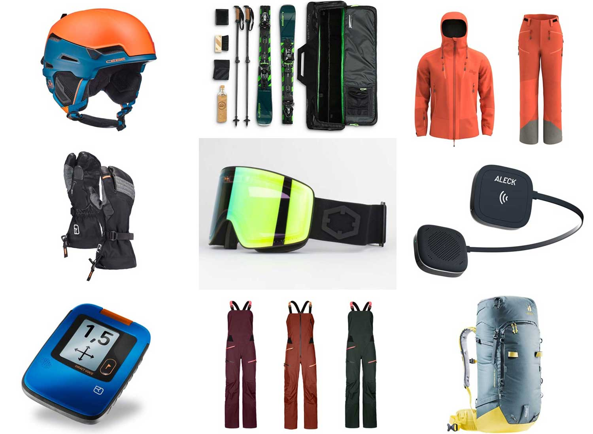

ABOUT SKIING
Skiing is a popular sport and recreational activity that can be enjoyed by people of all ages. It is also a major industry, with ski resorts and related businesses generating billions of dollars in revenue each year.
In addition to providing a fun and exhilarating experience, skiing also offers a number of health benefits, including improved cardiovascular fitness, increased strength and flexibility, and reduced stress.

There are many different types of ski equipment, including skis, boots, poles, and protective gear. Skis come in various shapes, sizes, and materials, and are designed for different types of skiing. Boots are critical for providing support, control, and comfort, and poles help skiers maintain balance and rhythm. Protective gear, such as helmets and padding, is important for reducing the risk of injury.
Regardless of skill level, skiing can be an enjoyable and rewarding experience. Whether you are a beginner or an experienced skier, there are many opportunities to explore new trails, improve your technique, and challenge yourself. With its combination of physical and mental demands, skiing is a sport that will test your abilities and reward your efforts. So, whether you are looking for a fun way to stay active or a thrilling new adventure, skiing is definitely worth considering!
A FAMOUS SKIER
One of the most famous ski champions of all time is Ingemar Stenmark, a Swedish alpine skier who dominated the sport in the late 1970s and early 1980s. Stenmark won multiple World Cup titles and numerous Olympic medals, and he is widely regarded as one of the greatest skiers of all time. He was known for his precise technique and his ability to ski at high speeds, and he set multiple records that still stand today. Stenmark's legacy continues to inspire skiers around the world, and he remains one of the sport's most beloved figures.
SKIING IN THE OLYMPICS
Skiing has been a part of the Olympic program since the first Winter Games in Chamonix, France in 1924. Alpine skiing, cross-country skiing, and Nordic combined (which combines elements of cross-country skiing and ski jumping) were included in the first Winter Olympics, and freestyle skiing was added to the program in 1988. The Olympic skiing events are some of the most highly anticipated and watched competitions of the Winter Games, and they showcase the best skiers from around the world competing for Olympic gold. From the heart-pumping action of the downhill races to the graceful movements of cross-country skiing, the skiing events at the Olympics provide a thrilling spectacle that has captivated audiences for nearly a century.